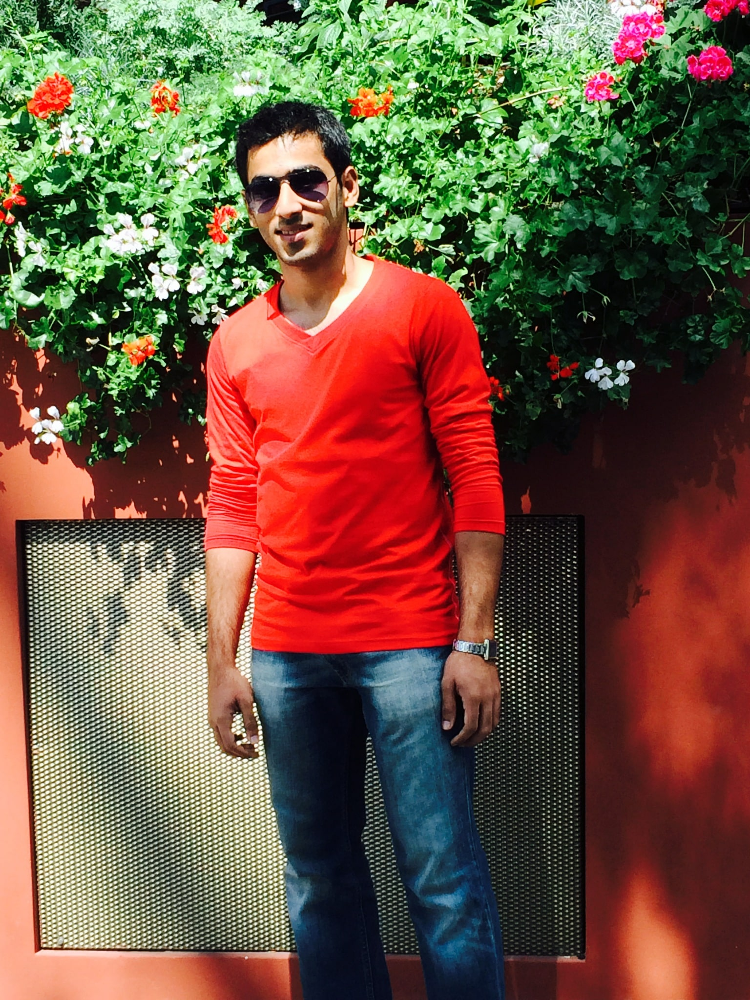
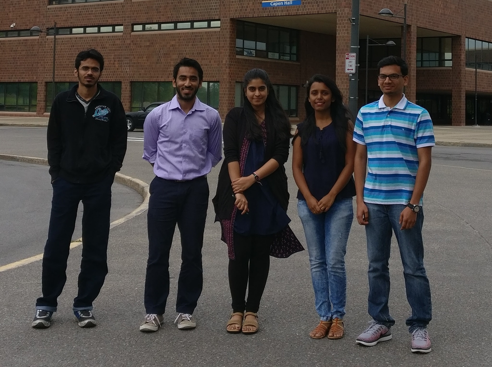
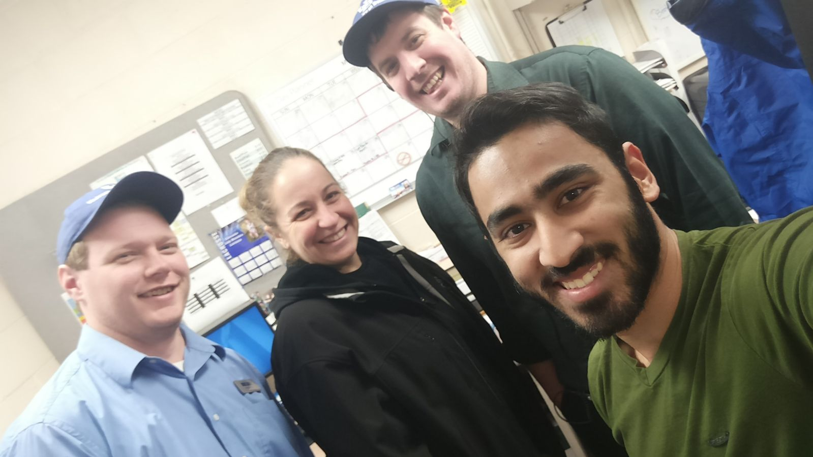
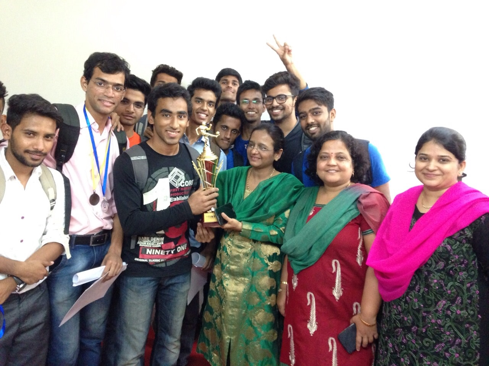

Who is Amaan?
Amaan Modak moved to Buffalo, New York from Mumbai in India. Completed his education from the State University of New York at Buffalo, where he obtained his Master's degree in Computer Science and Engineering. He is looking for a job in the fast-paced and developing field of Software Engineering. Being passionate about computers and software development, the choice of computer science as a future career was only natural. In his free time, he loves to read books, and go hiking with his friends. Amaan is also a part of a soccer club, and loves participating in and promoting local soccer tournaments. Before moving to Buffalo, Amaan worked in Praxis Interactive Solutions in Mumbai as a Consultant Instructional Writer. With encouragement from friends and family, Amaan jumped ship and moved to the United States, the land of opportunity. It is here that he hopes to make a name for himself, and make a positive difference to the world and give back to society.

Hi, I'm Amaan Modak
Timeline
- August 30, ’93: The day I was born.
- May ’09: Completed Secondary School Education from St. Stanislaus High School.
- April ’11: Completed Junior College Education from R.D National College.
- August ’11 - May ’15: Pursued a Bachelor's degree in Computer Engineering from Rizvi College of Engineering.
- June ’15: Graduated with a B.E. in Computer Engineering, with a 4.00 GPA.
- May ’15 - July ’15: Worked as a Consultant Instructional Technical Writer for Praxis Interactive Technologies in the Math and Testing department, in the field of e-learning.
- August ’16: Moved to Buffalo, New York to pursue my Master's degree in Computer Science and Engineering from University at Buffalo, State University of New York.
- August ’16 - December ’17: Studied for my M.S. degree specializing in software development and data sciences, while simultaneously working as a student manager in Ellicott Food Court.
- May ’17 - September ’17: Worked as a Graduate Research Assistant in the Civil Engineering Department under Dr. Mettupalayam Sivaselvan, and led a team of developers to create the eGuru Learning Software.
- December ’17: Completed my Masters degree in Computer Science and Engineering with a GPA of 3.55, and moved to Atlanta, Georgia to take the next step towards my dream career.
- February ’18 - ???: Only time will tell.
Personal Details and Hobbies
- A proud Indian by birth, and hope to do something to make the lives of the billions of people in the country, and the rest of the world, better.
- Comfortably fluent in English, Hindi, Marathi, Urdu, and Konkani. Would love to learn Spanish and French, and many more langauages whenever possible.
- First love is computers and programming. Also love to play soccer (a very close second), read all kinds of books, watch movies and tv shows, solve puzzles, and travel to infinity and beyond.
- Represented Rizvi College of Engineering at various inter-collegiate soccer tournaments at National level, as player and captain of the team. Also represented St. Stanislaus High School in inter-school cricket and soccer tournaments at junior level.
- Chief coordinator in the college sports, technical and cultural fests RAYS 2014 and 2015, and was in command of the team responsible for the smooth functioning of all events, during undergraduate days.
- Active volunteer for Helping Hands, a not-for-profit social organization. Organized blood donation drives, educational workshops for underprivileged children in the city, and sports days for children from impoverished areas. Regular blood donor in hospitals and blood drives.


Work Experience and Education
Professional Experience
-
Project: eGuru Learning Software
• A complete quiz taking and feedback providing software aimed at the mechanical and civil engineering undergraduate students. It provided the instructors with an easy method of asking students to answer questions related to the course being taught, and also provide the students with the necessary feedback based on the answers that the students have chosen.
• Led a team to design, develop and test an examination tool software, to aid the department of Civil Engineering to conduct tests and automate the process of grading, using Java, Swing, Junit, Git and Eclipse for the process.
• Interacted with the clients and the project manager to gather the technical and design requirements, and liaised with the product team to identify new requirements and manage costs and schedule.
• Developed the software using Agile methodology and followed the best practices of SDLC.
• Solved the problem of manual grading mistakes, reduced the time taken to prepare and grade the tests by 50%, and achieved 99% accurate evaluation results.
• It aims to eliminate the traditional pen-and-paper method of in-class quizzes, whereby easing the burden on both the students and the instructors in the class.
It will be put in place for all courses from Spring 2018 in the Civil Engineering department for official class quizzes and assignments.
 -
• Worked in a team of instructional writers in the mathematics and testing department to design the syllabus and questions for school students of Grade 1-10 in the US
• Coded and performed testing and debugging on the front-end website for the clients.
• Created educational lessons and tests based on the requirements conveyed to us by the clients.
Leadership Experience
-
• Started work as a student employee at certain stations in the food court.
• Based on the quality of my work, I was promoted to student manager and made responsible for the proper daily functioning of the various stations in the entire food court along with other managers.
 -
• Started The Menace Football Academy to teach kids aged 6 to 15 how to play soccer.
• Coached approximately 30 children at a time during various seesions based on the different age groups and created customized training drills and routines for each age group, along with a team of 4 coaches.
• Managed a team of children who reached the semi final of an under-14 outdoor soccer tournament held at the Cooperage ground in Mumbai.
• Responsible for the smooth functioning of the football academy and led various workshops and events for all the participating children.
Volunteer Experience
-
• Organized blood donation drives in various location over Mumbai, India.
• Set up educational camps and workshops for underprivileged children in the city.
• Coordinated sports days and other activities for children from impoverished areas.
-
• Managed the technical events held during the inter-college festival.
• Organized technical workshops such as Unity game development workshop, Robotics workshop and Cyber security workshop for the students from the Computer Science and Electronics engineering fields.
• Student council member and acted as a representative for the students and interacted with the professors and the dean to ensure the best solution to any student-related problem.
• Coordinated various placement drives along with the Technical Placement Officer and interacted with various company representatives before the campus job fair.
Education
-
University of Buffalo, State University of New York, Buffalo, New York
• Degree Obtained: Master of Science, Computer Science and Engineering
• Date of Graduation: February 2018
• GPA: 3.55/4.00
• Member Organizations: Intramural Soccer, Graduate Indian Student Association, Muslim Student Association.
-
Rizvi College of Engineering, Mumbai, India
• Degree Obtained: Bachelor of Engineering, Computer Engineering
• Date of Graduation: June 2015
• GPA: 4.00/4.00
• Additional Achievements: Computer Science Student of the Year, Technical Secretary of Student Council, Captain of the inter-college soccer tournament winning team, Technical Placement Coordinator, Chief coordinator of college festivals in sports and technical events from 2013 to 2015.
• Member Organizations: Inter-college Soccer and Cricket Teams, Technical Students Committee, Robotics Club, Computer Science Association.

Projects and Research Interests
Projects Completed
-
Project Guide: Dr. Matthew Hertz, UB.
• A complete quiz taking and feedback providing software aimed at the mechanical and civil engineering undergraduate students. It provided the instructors with an easy method of asking students to answer questions related to the course being taught, and also provide the students with the necessary feedback based on the answers that the students have chosen.
• Developed the software using Agile methodology and followed the best practices of SDLC.
• Led a team to design, develop and test an examination tool software, to aid the department of Civil Engineering to conduct tests and automate the process of grading, using Java, Swing, Junit, Git and Eclipse for the process.
• Interacted with the clients and the project manager to gather the technical and design requirements, and liaised with the product team to identify new requirements and manage costs and schedule.
• Solved the problem of manual grading mistakes, reduced the time taken to prepare and grade the tests by 50%, and achieved 99% accurate evaluation results.
• It aims to eliminate the traditional pen-and-paper method of in-class quizzes, whereby easing the burden on both the students and the instructors in the class.
It will be put in place for all courses from Spring 2018 in the Civil Engineering department for official class quizzes and assignments.
• Technologies Used: Java, Swing, Junit, JBuilder, Canvas, Git and Eclipse.
-
• An HTML website containing my resume and online portfolio.
• An efficient way to display my resume, make my profile more appealing to recruiters, and stand out from the crowd.
• Technologies Used: HTML5, CSS, JavaScript, Bootstrap
-
Project Guide: Dr. Wenyao Xu, UB.
• The tasks here were to determine the proper Verilog module which would operate (either by voxels marking or line intersection, see the design section) on an incoming voxel coordinate pairs, the Verilog module which would distinguish whether an incoming voxel pair is malicious, and determine the Verilog implementation which would successfully detect whether there is a collision occurring between the two voxel pairs.
• Technology Used: Verilog
-
Project Guide: Dr. Varun Chandola, UB.
- Handwritten Digits Classification using Machine Learning: In this assignment, our task was to implement a Multilayer Perceptron Neural Network and evaluate its performance in classifying handwritten digits. We also used the same network to analyze a more challenging face dataset and compare the performance of the neural network against a deep neural network using the TensorFlow library.
Click here to view the project on GitHub. - Logistic Regression and SVM: In this assignment, our task was to implement Logistic Regression and use the Support Vector Machine tool to classify handwritten digit images and compare the performance of these methods, in machine learning.
Click here to view the project on GitHub. - Implementation of classification and regression in machine learning: Here, we implemented various concepts in machine learning such as Gaussian Discriminators (LDA and QDA), Linear Regression, Ridge Regression and Non-linear Regression.
Click here to view the project on GitHub.
• Technologies Used: Python, numPy, sciPy, TensorFlow
- Handwritten Digits Classification using Machine Learning: In this assignment, our task was to implement a Multilayer Perceptron Neural Network and evaluate its performance in classifying handwritten digits. We also used the same network to analyze a more challenging face dataset and compare the performance of the neural network against a deep neural network using the TensorFlow library.
-
Project Guide: Dr. Chang Wen Chen, UB.
• In this project Hough Transform was implemented from scratch to detect circles of any given size in any image provided as input.
• The algorithm was executed using various concepts in computer vision and image processing such as Edge Detection, Gaussian Filtering and Accumulator Arrays.
• Technologies Used: Python
-
• Designed a music player in MATLAB and Java, which would automatically suggest songs based on the user’s emotions detected using facial expression recognition, captured using the user’s camera.
• Achieved an overall accuracy of 83% in capturing and identifying the correct facial expression of the user.
• Project involved using SVM to classify the emotions and using the JAFFE database as the training data.
Technologies Used: MATLAB, Java
-
• Designed a movie review website, from scratch, where the user can access information about any movie in the database, and provide a personal review.
• Used HTML5, CSS, Bootstrap and Javascript for the front-end, and PHP and MySQL for the back-end development.
• Technologies Used: HTML5, CSS, Bootstrap, Javascript, PHP, mySQL, Apache.
-
Project Guide: Dr. Jing Gao, UB.
• Configured a single-node Hadoop cluster and implemented MapReduce K-means, along with the other clustering algorithms in Python.
• Compared time complexity and achieved results with non-parallel K-means for given training datasets.
• Also implemented three clustering algorithms to find clusters of genes that exhibit similar expression profiles, which are K-means algorithm, Hierarchical Agglomerative clustering with Single Link (Min), and Density-based DBSCAN (Density-based spatial clustering of applications with noise)
• Technologies Used: Python, numPy, sciPy, skLearn, Hadoop, Hbase.
-
Project Guide: Dr. Jing Gao, UB.
• Implemented three classification algorithms by yourself: Nearest Neighbor, Decision Tree, and Naïve Bayes.
• Implemented Random Forests based on our own implementation of Decision Tree.
• Implemented Boosting based on our own implementation of Decision Tree.
• Adopted 10-fold Cross Validation to evaluate the performance of all methods on the provided datasets in terms of Accuracy, Precision, Recall, and F-1 measure.
• Technologies Used: Python, numPy, sciPy, skLearn, Hadoop, Hbase.
Research Interests
- Machine Learning
- Data Analytics
- Computer Vision & Image Processing
- Online Information Retrieval
- Big Data
- Computer Hardware Architecture (3D Printing)
- Software Engineering Agile Development
- Web Development & Design
- Technological Innovation & Management Techniques
- Project Management
To get in touch with me
Hey there – Thanks for visiting! I’m stoked that you’d like to get in touch with me.
Feel free to contact me via any of the mediums mentioned below. If you are unable to get in touch with me by call for any reason, drop me a mail and I will get back in touch with you at the earliest.
- Email ID Personal : amaan.modak@yahoo.com
- Email ID Official : amaanakh@buffalo.com
- Contact Number US: +1 7162759087
- Contact Number India: +91 7718915777
- Facebook: amaanmodak786
- Skype: amaan.modak
- Linkedin: in.linkedin.com/in/amaan-modak-bb5b20126
If you feel that I can be of any service to you, you may view and download my resume for your reference by clicking on the view resume button below.